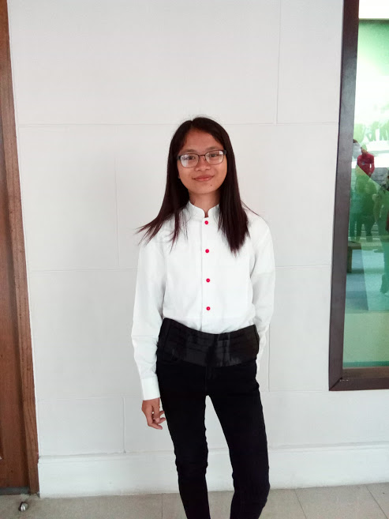
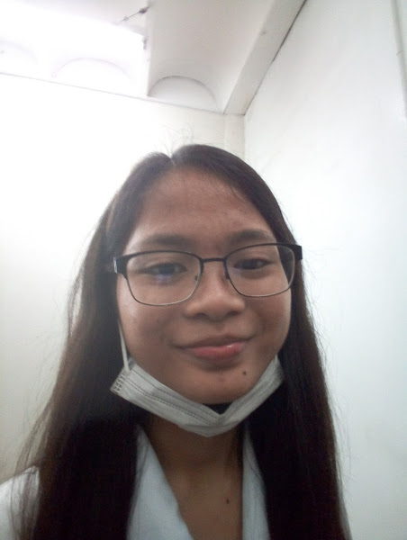

Journey of Myself
Teenage Years
 Happy to say that almost all of us in STE are with honors, highest honor, valedictorian.24 My teenage and junior high was really memorable.25
After completion, me and friends especially my squad are going to enroll in different schools for senior high.26
Me and my 4 STE classmates enrolled in La Salle College Antipolo and took STEM strand.27 It’s really quiet there
because it’s away from the town, or center.28 Everything goes well and together graduated high school in 2019.29
Happy to say that almost all of us in STE are with honors, highest honor, valedictorian.24 My teenage and junior high was really memorable.25
After completion, me and friends especially my squad are going to enroll in different schools for senior high.26
Me and my 4 STE classmates enrolled in La Salle College Antipolo and took STEM strand.27 It’s really quiet there
because it’s away from the town, or center.28 Everything goes well and together graduated high school in 2019.29
College Years

 After graduating high school I was like, I need a break,can I stop for a while like I will not enroll college.1
I can’t decide what course I should take.2 I dreamed of surgeon, because of the movies, k-dramas I watched about doctors.3
I dreamed of architecture, because somehow I want to design a house and know about drawing and designing.4 College of music in UPD or
UST but it didn’t happened.5 I didn’t have to chance to choose and try all of that because of insecurity and
because I’m scared too.6 Hearing the word college was like hell for us I don’t know why.7 I dream
to study in Manila that’s why I looked for universities in Manila.8 My friend in Philippine Youth Symphonic
Band invited me to try in UE Manila and try to be scholar of band there.9 I didn’t have a chance to reject
her invite because my parents know that she invited me.10 So I try, because my parents also wanted already
to enroll myself.11
After graduating high school I was like, I need a break,can I stop for a while like I will not enroll college.1
I can’t decide what course I should take.2 I dreamed of surgeon, because of the movies, k-dramas I watched about doctors.3
I dreamed of architecture, because somehow I want to design a house and know about drawing and designing.4 College of music in UPD or
UST but it didn’t happened.5 I didn’t have to chance to choose and try all of that because of insecurity and
because I’m scared too.6 Hearing the word college was like hell for us I don’t know why.7 I dream
to study in Manila that’s why I looked for universities in Manila.8 My friend in Philippine Youth Symphonic
Band invited me to try in UE Manila and try to be scholar of band there.9 I didn’t have a chance to reject
her invite because my parents know that she invited me.10 So I try, because my parents also wanted already
to enroll myself.11

I audition first before taking an entrance exam.12 When I found out that I passed
the audition, my parents are happy because they can finally save and focus spending or investing their saving to my younger
sister.13 At first, I want to try to take BSND, I don’t know why.14 I told my parents I will take BSND,
but my father said something so it’s a no.15 Days have passed, they are annoyed and started to scold me because
I’m still not enroll and no decision at all.16 So I don’t know why I ended up taking BSIT, because I guess I heard
that there’s few math subjects I think.17 I really don’t know, then little by little I learned and accept the fact
that it’s really true that I ended up and took BSIT.18 I’m from Antipolo and every day I commute to go school.19
At first it was really hard for me to adapt and I’m glad that I met some people and we became friends or squad.20
As the time and year level passed by, our bond is getting stronger and stronger, even though sometimes we’re pulling
each other to be lazy or just chill but we’re still moving forward to learn and graduate together on time.21